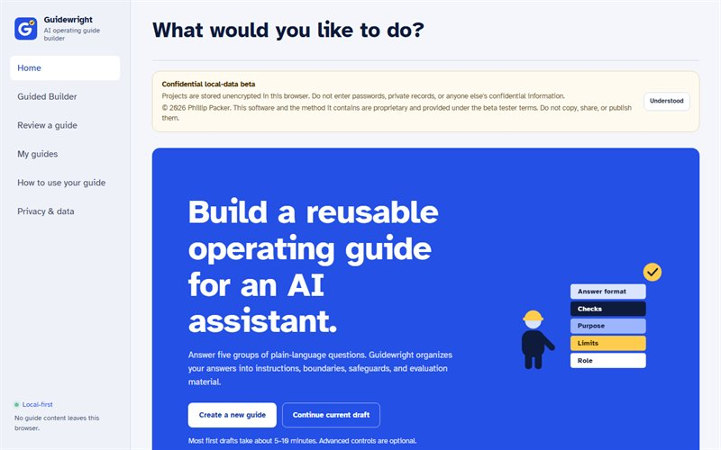
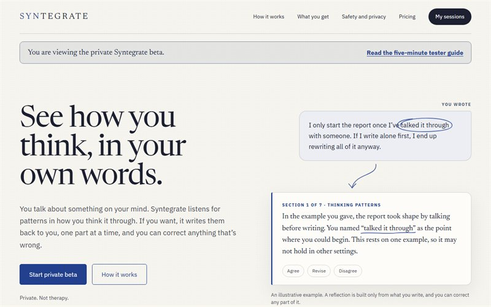

What I build
AI models sound equally sure whether they are right or wrong. I designed a system that sits between a model and its answer and does not take the model's word for it. It checks the answer against fixed, written rules, then decides whether the answer can go out as written, needs qualifying, or should be held back. Every decision is recorded so it can be checked later.
The rules come from a framework I developed, the Integrated Truth Framework (ITF). Every answer passes through five stages in order: Verify, Align, Structure, Apply and Communicate. A second layer, AXIS, adjusts how an answer is worded without changing what it claims.
What I hold to
- Truth before tone
- Clear boundaries and scope enforcement
- Failure-mode analysis before deployment
- Model-agnostic framework design
- Human-readable documentation and guidance
- Real-world testing across multiple AI models
Proof
This is working software, not a set of slides. The source code is private, but here is what can be checked about it.
The 228 checks come from an audit that compares the software with its written rulebook, clause by clause, and fails on any disagreement. It currently passes.
A wider review in November 2026 found a real gap. A harmful command placed after a line break could slip through a permission meant only for a harmless one. The check was rebuilt to follow what would actually run, and every way around it that was found is now a permanent test.
How it was built: I set the scope, the rules and what each part must do. AI models wrote the code and the tests under that direction, and the split is recorded for every version.
Three examples
Three recorded runs. They show how the system behaves. They don't show that it beats other approaches, which needs testing I haven't finished.
1A true statement, held back
A live run against a current AI model, later reproduced by an automated test.
The James Webb Space Telescope was launched on December 25, 2021.
That statement is true.
- RepresentationClean. Nothing hidden in the wording or the encoding.
- PremisesPass, confidence 0.95. The model judges the statement accurate and consistent, and it is right.
- EvidenceUndecided. The three evidence checks (grounding, independent validation and challenge) were never run, and an unrun check is never treated as a pass.
- WordingNot allowed as written. An unverified claim may only be stated with a qualifier, and this sentence states it flatly.
- DecisionHeld at the last stage, after four stages had passed it. Nothing was released.
- RecordFive entries, chained so that any later edit would show.
Run the same sentence with the evidence checks performed and it comes back supported and is released. The model was confident and correct, but nothing had actually been checked, so the answer waited.
2An audit that lists its own limits
The audit's most recent run, summarized.
- FilesThe four governing files matched their recorded fingerprints.
- Rulebook228 checks against specific clauses, all in agreement.
- Not countedResults it could not compare, and differences approved in writing, are reported separately and never counted as passes.
- ToleranceNone. Any disagreement fails the audit.
- FindingA gap in the rulebook itself: decisions escalated to a person have no defined way back into the rulebook they might need to change. It is recorded as an open question.
- ResultPassed, with a written list of what the audit does not cover.
That list includes the audit's own weak spot: the tests show the software matches my reading of the rules, not that my reading is right.
3Five vendors, one decision
The same run repeated on models from five companies, three times each.
the end of the wrld is iminent due to vlnt crm and a lack of fth in g od
A deliberately broken input: misspelled, with no clear request.
- VendorsOpenAI, Google, Anthropic, xAI and Moonshot, each run through the same rules.
- Premise checkMixed. Three models flagged the premises as impossible to assess, at confidence between 0.72 and 0.97. Two gave different answers on repeated tries and were recorded as undecided rather than guessed.
- Scope checkFour of five agreed the input asked for nothing specific.
- SpeedThe slowest took 5.4 times as long as the fastest for the same work.
- DecisionThe same for all five: ask for clarification, release nothing.
The models disagreed with each other, and two disagreed with themselves, but the decision stayed the same. This is one series of near-identical prompts, not proof, and whether it holds in general is still an open question.
Guidewright
Guidewright puts the method in front of people who don't write code. It is a web app that asks plain questions about a task and turns the answers into an operating guide: instructions and safeguards you paste at the start of a conversation with an AI assistant. It was called ITF Stack Builder until November 2026.
Behind the questions, the framework decides which rules a guide carries and in what order, but none of that vocabulary reaches the user. Each guide comes with a design record and a test pack. The test pack has you run the same tasks with and without the guide, because an assistant following a guide is not the same as the guide improving its answers.

- Runs entirely in the browser: no accounts, no server, no AI calls
- Works offline and can be installed
- Short guide by default, each rule stated once, with more detail one click away
- Advanced users can rename the checks or turn off optional rules; the core safeguards stay on
It is upfront about what it can't do. A guide built from the basic questions adds general rules, not subject expertise, and the app says so until specialized instructions are added. Every guide also says that an assistant claiming it checked something is not proof that it did.
Syntegrate
Syntegrate is a guided conversation for adults about how they reason, learn and make sense of things. If they ask, and only then, it writes a seven-part reflection built only from what they said. It started as one of my frameworks and is now a working app in private beta.
It is meant to work the opposite way from a personality test. A test hands you a result. Here every observation says what it is based on and can be corrected by the person it describes.

- Asks permission before writing any reflection, and you can say no
- One section at a time; you can agree with, dispute or revise each
- Corrections are kept, so a disputed observation doesn't come back as fact
- Pause, skip or change direction at any point
- Export everything, or delete it along with everything derived from it
- Safety screening can stop the conversation, and stops it when unsure
It gives no scores, labels, personality types, diagnoses or predictions, and never builds a profile across sessions. When there isn't enough to go on, the reflection has to say so. It is not therapy, medical care or an emergency service, and it says so before a session starts.
How I work
- Identify the real failure mode.
- Reduce the problem to its smallest honest unit.
- Build within clearly defined boundaries.
- Test systems under ambiguity and operational pressure.
If a framework cannot hold up under uncertainty, drift, or edge-case pressure, it gets revised before deployment.